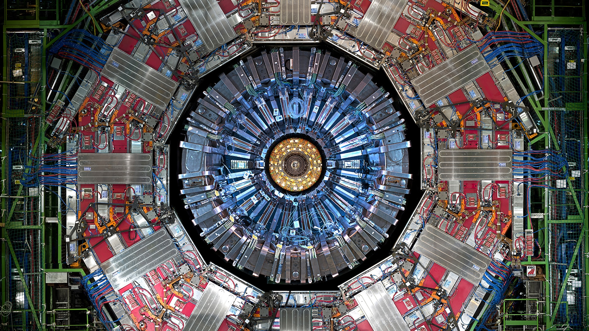

> ESTADO: CONECTADO
Emiliano Aguilar
[Ingeniero en Tecnologías de Cómputo y Telecomunicaciones]
Bienvenido al nodo. Aquí convergen la lógica del código, la infraestructura de redes y la curiosidad científica.
> /root/Sobre_Mi.txt
Soy un Estudiante de Ingeniería apasionado por la arquitectura invisible que sostiene nuestro mundo digital. Mi especialidad es la intersección entre el Software (la lógica) y el Hardware/Redes (la infraestructura).
Más allá del código, busco respuestas en la ciencia y la filosofía. Como divulgador, he creado una comunidad de +300K mentes curiosas, compartiendo la idea de que entender la tecnología es entender el futuro.
> Ejecutando Proyectos...

Análisis de Muón (CERN)
Reconstrucción de masa invariante utilizando bases de datos reales del CMS. Visualización de física de partículas de alto nivel.
Repositorio Central
Acceso directo a todos los proyectos, scripts de automatización, configuraciones de red y desarrollos web.